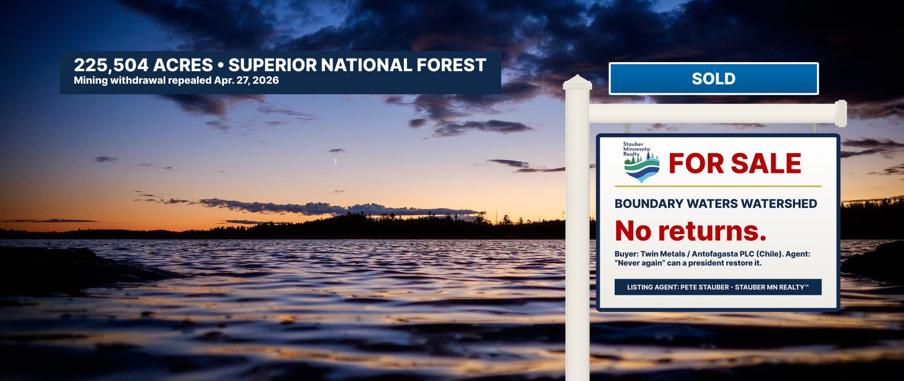

The Boundary Waters Watershed — Rainy River Headwaters, Superior National Forest
Upstream of the Boundary Waters Canoe Area Wilderness, near Ely · MN-08
Lakefront, forever. The protection, not so much.
Presenting the most-visited wilderness in America, now with mineral rights. The Boundary Waters Canoe Area Wilderness is 1.1 million acres of lakes and forest along the Canadian border. The water flows north, through the Rainy River headwaters, which is where the property line gets interesting.
In January 2023, after a Forest Service review that drew about 675,000 public comments — more than 95% in favor of protection — the federal government withdrew 225,504 acres of the Superior National Forest upstream of the wilderness from mineral leasing for 20 years. The main prospective buyer, Twin Metals Minnesota, is owned by Antofagasta plc, the London-listed Chilean mining company controlled by the Luksic family.
Agent Stauber, who chairs the House subcommittee on energy and mineral resources, wrote the resolution to undo it. H.J. Res. 140 passed the House 214–208 on January 21, 2026 (Roll Call 38), cleared the Senate 50–49 on April 16, and was signed on April 27. It was the first time the Congressional Review Act had been used to kill a mineral withdrawal, and under that law no future president can issue a substantially similar protection. Sen. Tina Smith: “they’ve set a new precedent that no public lands are ever truly safe.”
The agent’s closing statement: “Never again will any Democrat President be able to unilaterally ban mining in this strategic area of the Superior National Forest.” Minnesotans, asked in August 2025, opposed copper-nickel mining in the watershed 57% to 23%.
Title dispute pending. In August 2026, Gov. Walz signed Executive Order 26-10, halting state permits and environmental review for nonferrous mining in the Rainy River Headwaters. The agent called it “a spiteful and harmful attack against the hardworking people of the Iron Range.” In September, the Minnesota DNR canceled a state mineral lease held by a Twin Metals subsidiary, effective November 10. The federal side of the deal remains closed.
MPR News (Aug. 18, 2026); Voyageurs Conservancy (Sept. 22, 2026)Decades of protection, closed in 96 days
From House passage to signature in 2026. Votes from the official House Clerk record.
| Date | Event | Details | Price |
|---|---|---|---|
| 1978 | Protected | Congress passes the Boundary Waters Canoe Area Wilderness Act, restricting mining inside the wilderness.U.S. Forest Service | — |
| 2016 | Offer rejected | Federal agencies decline to renew Twin Metals’ leases and propose a study of a 20-year mineral withdrawal.Earthjustice | — |
| 2018–19 | Price reduced | The Forest Service cancels the withdrawal study; the leases are reinstated and renewed.Earthjustice | — |
| 2018 | Appraisal filed | Harvard economists James Stock and Jacob Bradt find protection beats mining on income in 69 of 72 scenarios: up to 4,500 more jobs and $900 million more personal income over 20 years.Harvard study via Bring Me The News | 69 of 72 |
| Jan 2022 | Offer rejected | The Interior Department cancels two Twin Metals leases, finding they were improperly renewed.Earthjustice | — |
| Jan 2023 | Protected | Public Land Order 7917 withdraws 225,504 acres from mineral leasing for 20 years, after ~675,000 public comments.Earthjustice | 20-year hold |
| Q2 2025–Q1 2026 | Financing | Twin Metals pays a lobbying firm led by former Interior Secretary David Bernhardt $380,000.Star Tribune | $380,000 |
| Aug 2025 | Market survey | Poll: 57% of Minnesotans oppose copper-nickel mining in the watershed, 23% favor; 68% call permanent protection a very important priority.Impact Research for Save the Boundary Waters | 57% / 23% |
| Jan 21, 2026 | Offer accepted | House passes the agent’s H.J. Res. 140, 214–208. Agent votes YEA.Roll Call 38 | YEA |
| Jan 23, 2026 | Credit check | Chile’s environmental regulator fines Antofagasta’s Centinela mine about $775,000 for failing to properly track water resources.MINING.COM / Reuters | $775K |
| Apr 16, 2026 | Under contract | Senate passes H.J. Res. 140, 50–49; Sens. Collins and Tillis vote no with Democrats.Outdoor Life | 50–49 |
| Apr 27, 2026 | Sold | Signed into law. Agent: “Never again.”Northern News Now; stauber.house.gov | 225,504 acres |
| Aug 2026 | Title dispute | Gov. Walz’s Executive Order 26-10 halts state permitting in the Rainy River Headwaters.MPR News | — |
| Sept 2026 | State lease canceled | DNR cancels a Twin Metals subsidiary’s state mineral lease, effective Nov. 10, 2026.Voyageurs Conservancy | — |
What the neighbors think
Items the agent would prefer you skip
Seller’s Disclosure Statement
- Who is the buyer?Twin Metals Minnesota, a subsidiary of Antofagasta plc, a copper miner listed in London and controlled by Chile’s Luksic family, whose fortune Forbes put at more than $25 billion in 2025. During the first Trump administration, Andrónico Luksic owned the Washington house rented by Ivanka Trump and Jared Kushner.
- Buyer’s environmental recordIn January 2026, Chile’s environmental regulator fined Antofagasta’s Centinela mine about $775,000 for not keeping proper track of water resources — a violation the regulator classified as minor. We include the classification because we’re fair. We include the fine because it’s about water.
- Industry track recordA 2012 Earthworks review of 14 major U.S. copper porphyry mines — 89% of U.S. copper production — found pipeline spills or accidental releases at all 14, and failures of water collection and treatment at 13. Copper-nickel mining in sulfide ore has never been done in Minnesota.
- Does this mean a mine is coming?Not yet. Twin Metals still needs its federal leases reissued, a mine plan, environmental review and permits — and Minnesota has now halted state permitting and canceled a state lease. What changed is that the federal protection is gone for good.
- What about jobs?Twin Metals projects about 750 direct jobs. Harvard economists found that protecting the watershed produced more income than mining in 69 of 72 scenarios, with up to 4,500 more jobs over 20 years. Both are projections; only one of them required repealing a protection.
- Correction to our earlier listingEarlier versions of this page said copper-sulfide mines have a “100% failure rate,” claimed specific treatment costs, acreage and species counts we could not source, and described cultural sites in ways we could not support. We replaced them with the sourced findings above.
Similar properties in this neighborhood


Public records cited in this listing
- House Clerk, Roll Call 38 (Jan. 21, 2026): H.J. Res. 140, 214-208; Stauber Yea
- Rep. Stauber, “President Trump Signs Stauber Bill into Law” (Apr. 27, 2026)
- Northern News Now, President signs mining-ban reversal into law (Apr. 27, 2026)
- Earthjustice, Senate vote on H.J. Res. 140 (Apr. 2026)
- Earthjustice, Interior cancels Twin Metals leases (Jan. 2022)
- Outdoor Life, Boundary Waters Senate vote breakdown
- Courthouse News, Senate Republicans scrap Boundary Waters mining ban (Sen. Smith quote)
- Star Tribune, Twin Metals lobbying and David Bernhardt
- Save the Boundary Waters, Impact Research poll release (Aug. 2025)
- MPR News, Walz executive order to block copper mining near the Boundary Waters (Aug. 18, 2026)
- Voyageurs Conservancy, the Walz order and Twin Metals lease cancellation (Sept. 22, 2026)
- Bring Me The News, Harvard economists on Boundary Waters protection vs. mining (2018)
- MINING.COM (Reuters), Chilean regulator fines Antofagasta’s Centinela mine (Jan. 23, 2026)
- Earthworks, “U.S. Copper Porphyry Mines” (2012)
- CBS News, Kushner and Trump’s landlord is a Chilean billionaire suing the U.S. government (2017)
- Wikipedia, Iris Fontbona (Forbes 2025 net worth)
- House Clerk, Subcommittee on Energy and Mineral Resources, 119th Congress (Stauber, chair)